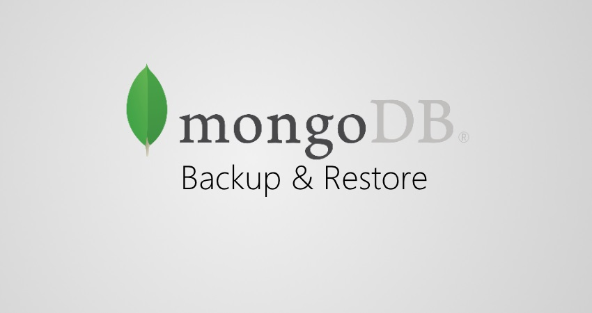

MongoDB Backup and Restore using Knife Plugins

This post would help anyone using Chef as a configuration management tool and MongoDB as the backend for their application. Ususally one would use chef in an RoR development environment. Knife is an orchestration tool that comes out of the box with Chef, which makes the Chef configuration management ecosystem very powerful.
Provided below are a couple of knife plugins that would help automate backups and restore of MongoDB in particular. Having said that, these plugins can be altered to suit any DB.
A few assumption need to be taken into account:
- CentOS 6.3, mongo db version 2.4.1
- Chef environment has the db config as below :
override_attributes({ database: { user: 'db_user', dump_dir: '/opt/mongodb-dump', auth: true, replica: { id: 'rsTest', mongo_primary:'x.x.x.x:27017', members: ['x.x.x.x:27017'], arbiter: 'x.x.x.x:27017'} }, }) - The database credentials are written in an encrypted data bag.
- The data bag key is placed in
/etc/chef/encrypted_data_bag_secret. - The data bag is called db_secret_data and each item has the same name as the environments in chef.
- Each item looks as below:
{ "id": "env_showcase", "database": "" } - The data base has a hash encoded which when decoded reads
{ "user": "db_user", "passwd": "password" }
Knife Plugin - DB Dump
module KnifePlugins
class MongoDump < Chef::Knife
banner 'knife mongo dump'
DBS = [:admin, :test, :development]
option :db_env,
:long => '--db-env DB_ENV',
:description => 'Environment to take the dump from'
deps do
require 'chef/search/query'
end
def run
@env = config[:db_env]
@s3_bucket = ENV['S3_BUCKET']
if !valid_env(@env)
ui.fatal 'Please provide environment name' +' e.g. knife mongo dump --db-env ft'
exit 1
end
db_nodes = db_node_search(@env)
if db_nodes.nil?
ui.msg "No db server nodes found for environment #{@env}"
exit 1
end
db_nodes.each do |db_node|
if db_node.include?("ec2")
node_id = db_node.ec2.local_hostname
else
node_id = db_node.ipaddress
end
if node_id == db_node.database.replica.mongo_primary.split(":")[0]
@db_primary = node_id
@db_port = db_node.database.replica.mongo_primary.split(":")[1]
end
end
ui.msg '-'*80
ui.msg cmd=dbdump_command(@db_primary, @db_port, @env)
%x[#{cmd}]
end
private
def db_node_search env
query = "chef_environment:#{env} AND roles:db_server"
query_nodes = Chef::Search::Query.new
db_servers = query_nodes.search('node', query)
return db_servers[0] if db_servers[0].size > 0
end
def valid_env env
true if !env.nil? && !env.strip.empty?
end
def dbdump_command db_host, db_port, env
dump_dir = "/opt/mongo_backup/#{env}-mongodump-$timestamp"
db_creds = load_databag(env)
cmd = "set -e; timestamp=$(date +'%Y%m%d%H%M');"
DBS.collect do |db|
cmd += "mongodump --host #{db_host} --port #{db_port} -u #{db_creds['database']['user']} -p#{db_creds['database']['passwd']} -d #{db} --out #{dump_dir};"
end.join(';')
db_dump_cmd_str = "rm -f /tmp/db_dump.sh;"
if !@s3_bucket.nil? && !@s3_bucket.strip.empty?
cmd += "s3cmd sync --force #{dump_dir} #{@s3_bucket}"
end
db_dump_cmd_str += "echo '#{cmd}' > /tmp/db_dump.sh;"
db_dump_cmd_str += 'sh /tmp/db_dump.sh;'
end
def load_databag env
db_secret = Chef::EncryptedDataBagItem.load_secret('/etc/chef/encrypted_data_bag_secret')
db_creds = Chef::EncryptedDataBagItem.load('db_secret_data', env, db_secret)
db_creds
end
end
endKnife Plugin - DB Restore
module KnifePlugins
class MongoDumpApply < Chef::Knife
banner 'knife mongo dump apply'
option :db_env,
:long => '--db-env DB_ENV',
:description => 'Environment to apply the dump to'
option :dump_dir,
:long => '--dump-dir DUMP_DIR',
:description => 'Full path to dump location'
deps do
require 'chef/search/query'
end
def run
@dump_dir = config[:dump_dir]
@env = config[:db_env]
if !valid_option(@env) && !valid_option(@dump_dir)
ui.fatal 'Please provide environment name and dump location' +
' e.g. knife mongo dump apply --db-env ft --dump-dir "/opt/mongo_backup/mongodump_201304131122"'
exit 1
end
db_nodes = db_node_search(@env)
if db_nodes.nil?
ui.msg "No db server nodes found for environment #{@env}"
exit 1
end
db_nodes.each do |db_node|
if db_node.include?("ec2")
node_id = db_node.ec2.local_hostname
else
node_id = db_node.ipaddress
end
if node_id == db_node.database.replica.mongo_primary.split(":")[0]
@db_primary = node_id
@db_port = db_node.database.replica.mongo_primary.split(":")[1]
end
end
ui.msg '-'*80
ui.msg "Applying mongo dump of build on #{@db_primary}"
ui.msg '-'*80
cmd=dbdumpapply_command(@db_primary, @db_port, @env, @dump_dir)
%x[#{cmd}]
end
private
def db_node_search env
query = "chef_environment:#{env} AND roles:db_server"
query_nodes = Chef::Search::Query.new
db_servers = query_nodes.search('node', query)
return db_servers[0] if db_servers[0].size > 0
end
def valid_option option
true if !option.nil? && !option.strip.empty?
end
def dbdumpapply_command db_host, db_port, env, dump_dir
db_creds = load_databag(env)
cmd = "set -e; mongorestore --host #{db_host} --port #{db_port} --username #{db_creds['database']['user']} -p#{db_creds['database']['passwd']} #{@dump_dir};"
db_dump_cmd_str = "rm -f /tmp/db_dump_apply.sh;"
db_dump_cmd_str += "echo '#{cmd}' > /tmp/db_dump_apply.sh;"
db_dump_cmd_str += 'sh /tmp/db_dump_apply.sh;'
end
def load_databag env
db_secret = Chef::EncryptedDataBagItem.load_secret('/etc/chef/encrypted_data_bag_secret')
db_creds = Chef::EncryptedDataBagItem.load('secret_data', env, db_secret)
db_creds
end
end
end